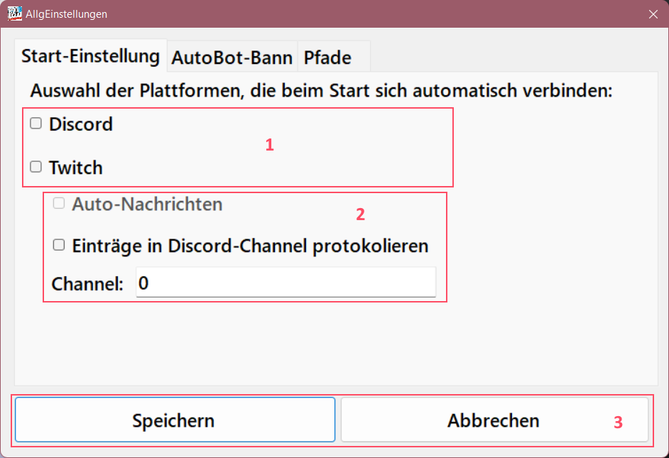
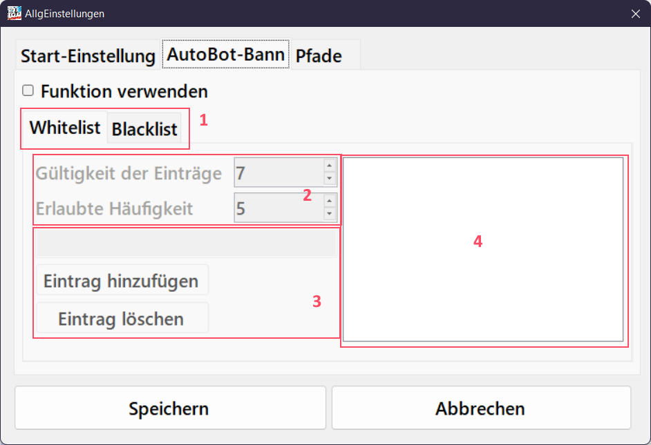
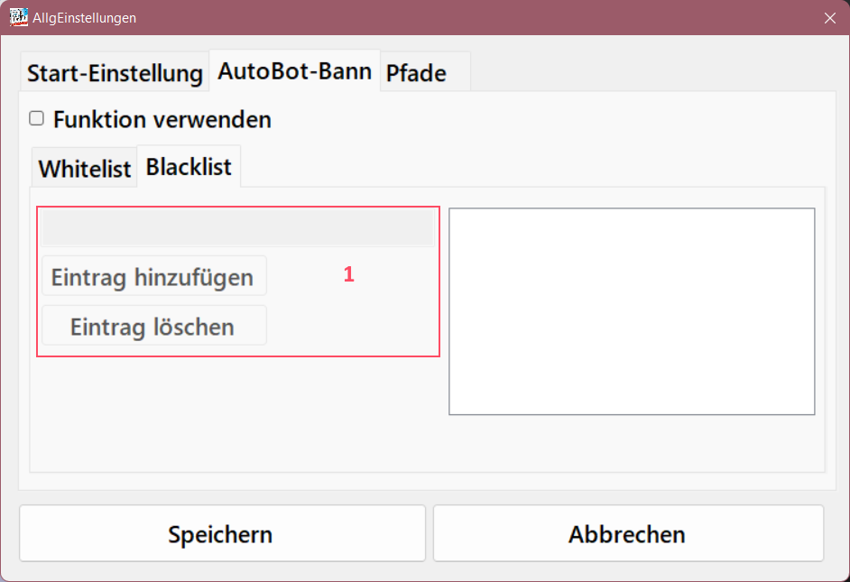
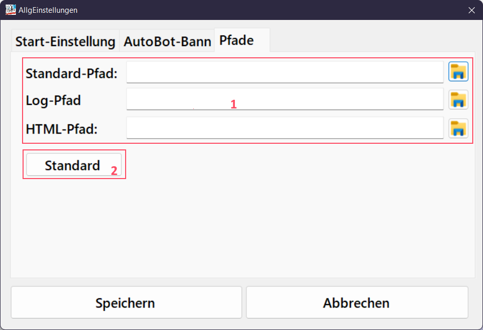

- Plattformen, die beim Starten der Anwendung automatisch angemeldet werden. Sind die Keys nicht in Ordnung, scheitert die Anmeldung beim Start des Programms
-
Zusätzliche Einstellungen zu Twitch
- Auto-Nachrichten: Sendet automatisch Nachrichten, wenn der Stream online ist. Zeitintervall wird in den Befehlen gesetzt. Nur aktiv, wenn Auto-Anmeldung an Twitch erfolgt
- Einträge in Discord: Die Log-Einträge der Konsole werden zeitgleich in einem Discord-Channel gepostet
- Die Channel-ID des Discord-Channels. Post ist auch nur möglich, wenn der Bot auf den Channel zugreifen kann
- Buttons zum Speichern oder Abbrechen der durchgeführten Änderungen

- Wechsel zwischen der User-WhiteList und der WörterBlackList
- Einstellung der Gültigkeit in Tage und die Anzahl an versuchen, wie häufig gejoint werden darf.
Ist eines der Werte Null erfolgt keine Prüfung
Wird verwendet um automatisch gejointe User (meistens Bots) automatisch von Channel zu bannen.
- Einstellung zum Hinzufügen oder Entfernen von User. Diese Eingetragenen User können ohne Beschränkung Nachrichten schreiben und dem Channel joinen
- Die Liste aller User, die in der Whitelist aufgenommen worden sind. Der Streamer selber steht immer in der Liste.

- Einstellung zum Hinzufügen oder Entfernen von Begriffen. Wird einer der Begriffe im Chat geschrieben, so versucht der Bot diesen Benutzer zu bannen.

- Standardpfade der Ausgabe der Standard, Log, und HTNL Einstellungen/PFade
- Button zum Setzen der Ausgabe auf den Standardwert. Der Standardwert ist das Verzeichnis, in dem sich der Bot befindet.